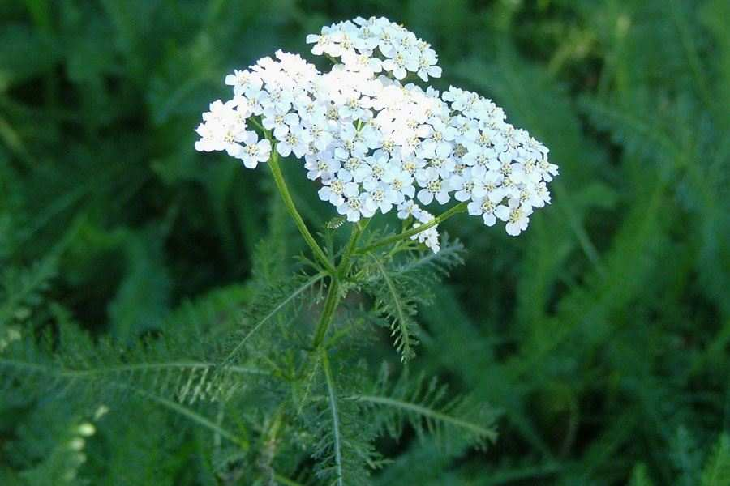
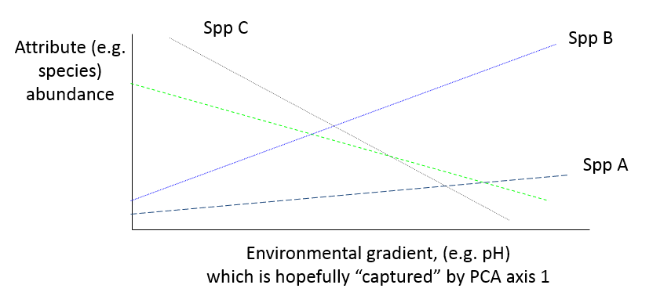
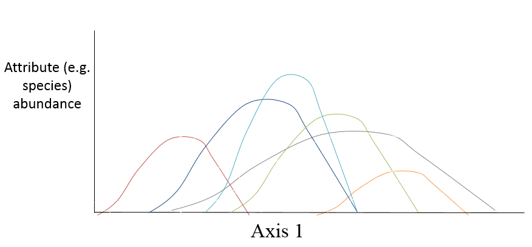
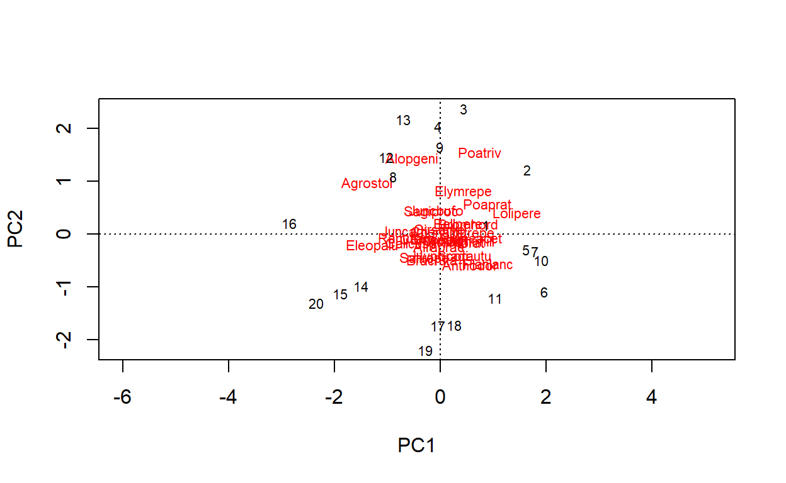
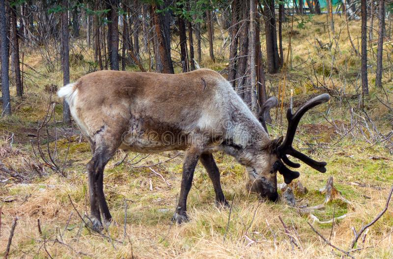

Introduction
Where might we have multiple responses?
All the examples we have looked at so far have only had one response variable, with one or more explanatory variables. However, there can be numerous examples where you collect lots of response variables. Examples include:
- invertebrate species x rocky shore quadrats
- gene sequence x isolate number
- metal concentrations x tissue sample
- bacterial operational taxonomic units (OTUs) x sample
- benthic species x trawl sample
These data will normally be recorded as tables, where each column is an attribute, and each row is a sample. Therefore in the above examples, the attributes are species, gene sequences and OTUs, whilst the samples are quadrats, isolates, individual whose tissue was sampled etc. Often these tables of data can be quite large, for example a typical invertebrate survey can easily record over 50 species within one family, whilst genetic studies can produce hundreds of sequences. Therefore the resulting tables can produce large numbers of columns for the attributes, as well as the rows for samples.
Summarising your data
When you have lots of response variables, you want to have an easy method to summarise your data, to help you interpret them. You might want answers to questions such as:
- Which species of plants most frequently co-occur?
- Which isolates are most similar in terms of their genetic composition?
- Which bacterial genes are associated with antibiotic resistance?
- Which quadrats have few species in common?
In the past scientists used simple metrics to try and understand these types of datasets. For example, species richness, which is the number of species that occur in a sample. However, you can quickly see that you could have two samples with the same number of species, but few, or even no species in common. More sophisticated techniques calculate diversity indices such as Shannon diversity and Simpson diversity. These measure both the number of species (or genes, or OTUs) and their frequency in the sample. However, again they ignore the identity of these individual attributes:
- you might have two quadrats with the same Shannon diversity but few species in common
- you might have two isolates with similar Simpson diversity, but little overlap in the gene sequences
Displaying similarities between attributes and samples
A better approach is to use methods that summarise the composition of your samples. By composition, we are referring to the number of species, their relative abundance, and the taxonomic identity of those present in each sample. Likewise if your sample is an isolate with gene frequencies, or OTUs etc. We can then measure the similarity in their composition to make it easy to compare samples or isolates.
This similarity in composition between samples can be measured on a:
- continuous scale, so that samples with similar composition are placed close together, and very dissimilar samples placed far apart.
- categorical scale, so samples with similar composition are placed into different groups, classes or categories
When we measure composition on a continuous scale it is referred to as ordination and when we do it on a categorical scale it is known as classification or clustering. The two approaches can be considered complementary.
What about the explanatory variables?
These can be used to help you interpret the results of your ordination or classification, so that you have a proper biological understanding of what is taking place. There are several ways of using explanatory variables. The explanatory variables can be incorporated into an ordination: this is known as constrained ordination . Where the ordination is more descriptive, and does not include explanatory variables, it is called unconstrained ordination. (There are not constrained equivalents for classification.) We will start with unconstrained ordination methods as these are the simplest to introduce.
Unconstrained ordination
The first biologists to struggle with multi-attribute data were ecologists, because of the large numbers of species that they collected in many field surveys. As a result, some of the methods will refer to sites and species, but please remember that the ‘sites’ could just as easily be samples, isolates, experimental plants etc., whilst the ‘species’ could be OTUs, gene sequences etc.
Column and row names
For all multi-attribute (also known as multivariate) datasets R
expects your raw data to have row names, as well as column names. These
can be alphnumeric, but column names must not start
with a number. If you save your data from Excel in .csv (comma separated
value) format, the read.csv() function will assume that the
first column contains row names. You will often want to keep row and
column names fairly short, so you can display them on the summary graphs
from your analyses. For example, typically species names are no longer
than 8- letter codes (4 letters genus, 4 letters species).
Dune dataset
We are going to analyse some vegetation data from the Netherlands, which is considered a ‘classic’ dataset and is used in quite a wide range of books.
This has been stored in a data.frame called
dune: use the exercise box below to get a summary of the
data. How many attributes (species) are present? How many samples
(quadrats)? What seems to be a common number in the data?
summary(dune)
head(dune)
nrow(dune)
ncol(dune)
rownames(dune)
colnames(dune)You can see that the column names (attributes) are species, for example “Achimill” is Achillea millefolium :
 The rownames can be numbers, which
can be useful for graphical display. The dataset contains 20 quadrats
from nrow() and 30 species from ncol(). The
values shown in the head() function is the cover-abundance
(measured on a scale of 0 to 10), but notice how common the value 0 is
in these data. This is quite common, and known as a
sparse dataset.
The vegan package
We are going to use the vegan package for these
analyses. It was originally developed for vegetation analysis (hence its
name), but has since been used in a wide range of other disciplines in
biology, including landscape analysis, molecular biology etc. If looking
for information on Google about the package, remember to add the word
‘multivariate’ to your search, otherwise it will return rather a lot of
recipes for food!
Different types of unconstrained ordination
There are several types of unconstrained ordination, and we will restrict ourselves to three.
- principal components analysis (PCA) - a linear method
- correspondence analysis (CA) - a unimodal method
- non-metric multidimensional scaling (NMDS) - ranked similarity method
Linear methods such as PCA assume a relatively constant increase or decrease in your attribute across your samples. So if some of your samples had low soil pH, and some high pH, the abundance of an individual species might increase or decline in roughly a straight line. If the analysis works well, the PCA will create new variables that ‘capture’ most of this change:

Unimodal methods such as CA assume that the abundance of an attribute can rise and fall along the axis. Where data are ‘sparse’ this can sometimes be more realistic for the analysis:

NMDS uses a quite different approach. It ranks the abundance values of your attributes (species, OTUs etc) and calculates pairwise similarities. It then tries to simplify these sets of similarities between all the original variables into 2 new variables for easy visualisation. It can be useful when the original data are extremely messy and difficult to interpret by PCA or CA.
Principal components analysis
Let’s analyse the dune data using principal components analysis
(PCA). The vegan package provides access to many advanced
multivariate methods. It has the rda() function, which when
used with only a response variable provides PCA, and if used with both
response and explanatory variables it automatically uses constrained
analysis. This can be a little confusing for beginners. Remember that in
both constrained and unconstrained analyses the “response variable” is
actually your data.frame containing lots of variables. The
summary() function on your ordination output produces lots
of information (most of which you do not need to study), so for this
website we’re going to limit amount of output. When you run it
interactively in RStudio, you’ll have to scroll up a bit to see the next
few lines.
# Undertake the PCA ordination
dune_pca <- rda(dune)
# First part of summary: importance of derived variables
summary(dune_pca)## Importance of components:
## PC1 PC2 PC3 PC4 PC5 PC6 PC7
## Eigenvalue 24.7953 18.1466 7.62913 7.15277 5.6950 4.33331 3.19936
## Proportion Explained 0.2947 0.2157 0.09069 0.08503 0.0677 0.05151 0.03803
## Cumulative Proportion 0.2947 0.5105 0.60115 0.68618 0.7539 0.80539 0.84342
## PC8 PC9 PC10 PC11 PC12 PC13 PC14
## Eigenvalue 2.78186 2.4820 1.85377 1.74712 1.31358 0.99051 0.637794
## Proportion Explained 0.03307 0.0295 0.02204 0.02077 0.01561 0.01177 0.007582
## Cumulative Proportion 0.87649 0.9060 0.92803 0.94880 0.96441 0.97619 0.983768
## PC15 PC16 PC17 PC18 PC19
## Eigenvalue 0.550827 0.350584 0.199556 0.148798 0.115753
## Proportion Explained 0.006548 0.004167 0.002372 0.001769 0.001376
## Cumulative Proportion 0.990316 0.994483 0.996855 0.998624 1.000000Creating the PCA is very simple. In a PCA you try to “squash” as much of the variability in your data into new derived variables, known as ordination axes where the first axis, PC1 “captures” as much of the variation as possible. The second axis, PC2 captures as much of the remaining variation etc.
Therefore in the above output, you can see on the line labelled
Proportion Explained that PC1 captures 0.2947 = 29.5% of
the variation, whilst PC2 captures 0.2157 = 21.6% of the variation.
Together, shown in the line labelled Cumulative Proportion,
they jointly capture 0.5105 = 51.1% of the variation. In other words,
these two new derived axes summarise just over half the variation in
your original table of 30 attributes (species) by 20 samples (quadrats
or sites). Other axes are produced, but note that they rapidly become
less important, with PC3 explaining only 9% etc., so usually you only
look at PC1 and PC2.
Visualising the results
PC1 and PC2 are created for both the attributes and samples, and the
easiest way to study them is via two graphs, that should be interpreted
together. You can display the results using the default
plot() command. When you have a lot of data these can
difficult to interpret.
The plot displays the species scores and site scores. Remember that depending on your experimental data, the species scores might be what you have measured so metal concentrations in a tissue sample or gene sequences while the sites scores will correspond to the individual you have sampled from.
# Display both on the same plot
plot(dune_pca)
The above plot is relatively straight forward to interpret. The species scores have been plotted as text and site scores have been plotted at numbers. There is a lot of information we can gather from this plot:
- sampling locations with similar site scores will have similar species compositions,
- where species scores are close together, then they will often be found at the same site,
- the closer a species is to site, the higher its abundance,
- the closer a species is to the centre of the plot (PC1 = 0 and PC2 = 0), the more common the species across all sites.
Quick interpretation of the plots
Even from these simple plots you can answer some questions. See if you can work them out:
Hopefully you can see that species close together in the ordination graphs tend to co-occur, and are found mainly in the quadrats in that part of the graph. In PCA plots you will often get a mass of overlapping species in the centre of the plot, along the zero-zero lines: these tend to be fairly widespread and ubiquitous species, not characteristic of any particular sites.
If we wanted to look at the those species in the centre of the plot,
we can look at the species scores more closely. We can extract the
species scores using the scores() function and select PC1
and PC2 with the choices = 1:2. Run the code below and look
down PC1 and PC2 columns to see if you can find Trifrepe
(Trifolium repens). What are the PC1 and PC2 scores?
Are there any other species which are found closer to PC1 = 0 and PC2 =
0?
scores(dune_pca, display="species", choices = 1:2)Looking down the columns for PC1 and PC2, you should see that
Trifrepe (Trifolium repens) has a PC1 = 0.581 and PC2
= 0.021. This species is hard to decipher from the cloud of text in the
middle of the plot but given these values we would expect to find it
most of the sites. If we look at the data in dune we find
it at 16 out of the 20 sites. Sometimes it is worth looking directly at
the species scores to help interpret your plot. Are there any other
species which are found closer to PC1 = 0 and PC2 = 0?
Relate PCA to explanatory variables
What do the PCA axes mean?
For most people one of the confusing things about PCA and other ordination techniques is that the PCA axes do not have any units, and you are left wondering what they really ‘mean’. In essence, that is up to you to find out, by trying to relate them to potential explanatory data. Typically you only need to look at the first ordination axis (PC1) as this captures most of the variation, but rarely you may want to look at PC2 as well.
Environmental data for the sand dune vegetation
We have some environmental data for the sand dune survey stored in a
data.frame called dune.env. Examine the data
in the box below:
summary(dune.env)
head(dune.env)
nrow(dune.env)
ncol(dune.env)Notice that the dune.env dataset has the same number of
rows as dune, i.e. one entry for each quadrat sample. It
does not need to have the same number of columns. The particular
variables in the dune.env dataset are:
- A1 = thickness of soil A1 horizon
- Moisture = ordered factor 1, 2, 4, 5
- Management = factor where BF (biological farming), HF (hobby farming), NM (nature conservation management), SF (standard farm management)
- Use = ordered factor with levels Hayfield < Haypastu < Pasture
- Manure = ordered factor 0 to 4
Let’s look at the relationship between Moisture and the PC1 scores.
You can extract the scores from your dune_pca object using
the scores() function, so to get the site (quadrat or
sample) scores, use
scores(dune_pca, display="sites", choice=1). The
choice=1 indicates to just extract the PC1 scores. Use this
command, storing the results in dune_pc1 and create a
boxplot against Moisture using
gf_boxplot():
# Extract the PC1 site scores
dune_pc1 <- scores(dune_pca, display="sites", choices = 1)
# Create boxplot
gf_boxplot(dune_pc1 ~ Moisture, data=dune.env)So, you can conclude that when PC1 is high the soil moisture content is also relatively high. Now go back to your plot of the species on PC1 and PC2.
In the same way that you have produced a graph for your Moisture,
investigate the other environmental variables against PC1. Remember,
depth of the soil A1 horizon is continuous, therefore
gf_point() is a more appropriate function.
gf_point(dune_pc1 ~ A1, data=dune.env)
gf_boxplot(dune_pc1 ~ Management, data=dune.env)
gf_boxplot(dune_pc1 ~ Use, data=dune.env)
gf_boxplot(dune_pc1 ~ Manure, data=dune.env)Which variables seem to have little relationship with PC1, which ones appear to go in different directions. If you have time, try and extract PC2 scores and see how they relate to the environment.
PCA arch effect
What can go wrong with PCA?
Sometimes the characteristics of your original data can cause problems for PCA, for example nearly all the samples squashed to one side of the plot, with a couple at the other extreme. This can arise when there are a couple of ‘outlier’ samples with an unusual composition of attributes. Sometimes this can be corrected by standardising your data before analysis:
mydata_std <- decostand(mydata_raw, method="standardize")
which standardises all the attributes to have zero mean and unit
(1.0) standard deviation. Other standardisation methods are available in
the decostand() function, and the "hellinger"
option can also be quite useful. See ?decostand for the
help pages.
Another problem is more subtle, and is known as the arch or horseshoe effect. It seems to be a particular problem for both ecological and gene sequencing data. This is when the differences in the composition of the samples is so extreme that PCA starts to pull the ends of the ordination together, forming an arch. Often unimodal methods (see earlier) such as CA or NMDS can correct this problem.
Arch effect example
The following exercise uses data from Vare et al (1995) who studied the effects of reindeer grazing in Scandinavia on the vegetation in pine forests.

The data consist of cover estimates of 44 species of plants
(attributes, in columns) at 24 survey sites. You can read the study
here If you look at the
paper you’ll notice that they used NMDS to analyse their data. What goes
wrong with PCA? Try it now, in the exercise box below; the data are
stored in the data.frame varespec:
# Create the PCA
varespec_pca <- rda(varespec)
# Check variation explained; if using RStudio just enter summary(varespec_pca)
summary(varespec_pca)[["cont"]][["importance"]]
# Plot PC1 and PC2 site scores only
plot(varespec_pca, display = "sites")
#plot PC1 and PC2 species scores only
plot(varespec_pca, display = "species")You can see that the amount of variation explained by PC1 and PC2 is high, at 53.8% and 25.4%, so together they explain almost 80% of the variation. This very high explained variation on just a couple of axes is sometimes caused by an arch effect, which you can clearly see in the resultant ordination plot. Notice too that in the species plot, nearly all of them are squashed together at the centre, with just 4 outlier species.
In this situation, we would need to think about other ordination methods.
Correspondence analysis (CA)
Correspondence analysis was the second of the three unconstrained ordination methods we introduced at the start. CA is a weighted form of PCA that can fit non-linear responses. We saw earlier that CA is used when our attributes rise and fall along a gradient to create a unimodal relationship. If our attributes are abundance or composition measurements for each species, then the rise and fall of species along a gradient represents beta-diversity. Beta-diversity represent the change in species contribution between sites or along an environmental gradient.
Let’s repeat the analysis using correspondence analysis (CA), which
assumes a unimodal relationship of the attributes (here
these are species) and the derived ordination axes. To undertake a
correspondence analysis, use the cca() function instead of
the rda() function.
# Create the CA
varespec_ca <- cca(varespec)
# Check variation explained; if using RStudio just enter summary(varespec_pca)
summary(varespec_ca)
# plot CA1 and CA2 for samples and species
plot(varespec_ca)
# Plot CA1 and CA2 of the samples
plot(varespec_ca, display="sites")
# Plot CA1 and CA2 of the species
plot(varespec_ca, display="species") The total amount of variation explained by the first two axes is much
less, at 25.2% and 17.1% respectively for CA1 and CA2, explaining 42.2%
in total (see the lines labelled Proportion Explained and
Cumulative Proportion). However, the graphs for both the
sites and species are much easier to understand, and the arch effect has
been removed.
With these data, CA would appear to be much better at analysing our data but we mentioned beta-diversity earlier. What additional ecological interpretation can we get from looking at the plot?
If we look at the site scores then we can see that along CA1 (x-axis) there is a big difference between the community composition at site 10 and 28. We would expect to see that the contribution for each of the species examined would be different between these two sites. The change in species composition from site to site represents beta-diversity.
This can be illustrated more clearly by looking at the relationship between the species cover estimates (original data collected) and CA1 scores. We can do this is four steps: extract site scores; select 4 species of interest; create a dataframe with sites scores and species coverage estimates; and final plot those data.
# Extract just the CA1 scores
sco1 <- scores(varespec_ca, display = "sites", ch=1)
# look at the top 6 rows of data
head(sco1)
# Select four species of interest and plot against CA1
varspec2 <- varespec %>% select(Cladstel, Pleuschr, Vaccmyrt, Empenigr)
# Merge CA1 scores and species abundance into one table and turn the row names into a column so we can plot the site numbers on the figure
mydat <- cbind(sco1, varspec2)
mydat$site_num <- row.names(mydat)
head(mydat)
# plot Vaccmyrt coverage against the CA1 score
gf_point(Vaccmyrt ~ CA1, data=mydat) %>%
gf_text(Vaccmyrt ~ CA1, label = ~site_num, size = 2, nudge_x = 0.1, nudge_y = 0.1)
# plot Cladstel coverage against the CA1 score
gf_point(Cladstel ~ CA1, data=mydat) %>%
gf_text(Cladstel ~ CA1, label = ~site_num, size = 2, nudge_x = 0.1, nudge_y = 0.1)We can see that for Cladstel there are high negative CA1 scores for sites 9 and 10 which decrease to approximately 0 at site 28. This shows us that Cladstel contribution to the community is decreasing along the CA1 axis. In comparison, the relationship between coverage of Vaccmyrt’s and CA1 scores is the opposite where it goes from high positive CA1 scores at site 28 to approximately zero at sites 9 and 10. If you look at the figure which plots the species and site scores together, Vaccmyrt is found close to 28 and Cladsetl is found close to 9 and 10, meaning that they are important components of those of those sites.
Non-metric multidimensional scaling (NMDS)
Recall that non-metric multidimensional scaling (NMDS) uses a somewhat different approach to creating the ordination, as it is concerned with the relative rankings of your sites along each axis, rather than absolute multi-dimensional distances. It determines these rankings from pairwise similarity scores between each pair of samples in turn, and analysing the resultant matrix (which is triangular, rather like the distances between cities tables you sometimes find in road atlases).
Vegan uses the metaMDS() function to
undertake NMDS based on a distance matrix. It calculates the
Bray-Curtis similarity which is robust for most data.
The algorithm has to run multiple times to find the best solution. If
needed, it will automatically standardise your data by either
square-root and/or ‘Wisconsin’ standardisation. You may see this
displayed in the output as the model runs.
Note
- Use the
print()rather thansummary()function to look at the output. - NMDS does not provide you with % variation explained on each axis. Instead it provides an overall “stress” level, where the lower the stress, the better.
# Create the NMDS
dune_nmds <- metaMDS(dune)
# Check the output
print(dune_nmds)
# Plot the NMDS sample (site) and attribute (species) scores
plot(dune_nmds)
# plot the site scores
plot(dune_nmds, display = "sites")
# plot the species scores
plot(dune_nmds, display = "species")The stress value is a measure of the goodness of fit. It is important because it gives an indication of how hard the algorithm is working to fit these data into 2-dimensional space whilst maximising the dissimilarities between samples. Stress values greater than >0.3 indicate that the positions in the plot are no better than arbitrary while anything <0.2 is worth looking at further. A good rule of thumb for understanding how much you can interpret from your NMDS based on stress is:
- stress less than 0.05 indicates an excellent configuration
- stress between 0.05 and 0.1 indicates a good configuration
- stress between 0.1 and 0.2 requires careful interpretation
- stress between 0.2 and 0.3 interpretation becomes difficult
- stress greater than 0.3 indicates there is unlikely to be groupings and the configuration plotted is arbitrary.
The NMDS plots with both the sites and
species scores together is difficult to interpret because
we don’t know which species is which or which site is which. We can edit
this plot so that we plot text rather than symbols which might help our
interpretation.
# plot empty space first
plot(dune_nmds, type = "n")
# add text for the sites
text(dune_nmds, display = "sites", cex = 0.7, col = "blue")
# add text for the species
text(dune_nmds, display = "species", cex = 0.7, col = "red")How do we interpret the final plot? Well sites close together will have similar community composition, in terms of species present and their abundances. So sites 14, 15 and 20 will have similar community structure and will be different to 5, 6 and 10.
NMDS is considered to be the most robust unconstrained ordination method for many biologists. See the paper by Minchin (1987) here
Summary
Key points
- Ordination methods provide a convenient way of summarising as much variation in your raw data into one or two new variables.
- Samples close together on these axes will tend to have similar attributes
- It is up to you to try and understand what these axes represent by interpreting them in relation to environmental data or laboratory experimental treatments.
There is a lot more that you can do with the vegan
package when it comes to analysing community data. On the R website
where the package is hosted, there is more information about the
capabilities of vegan in the vignettes
section. It is worthwhile having a look at these if you are
interested to learn more.